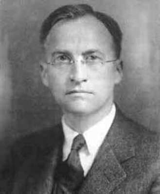
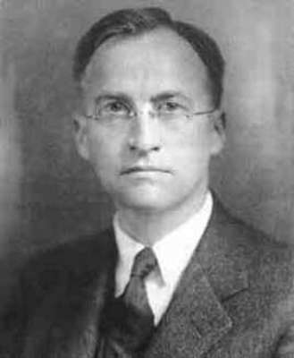
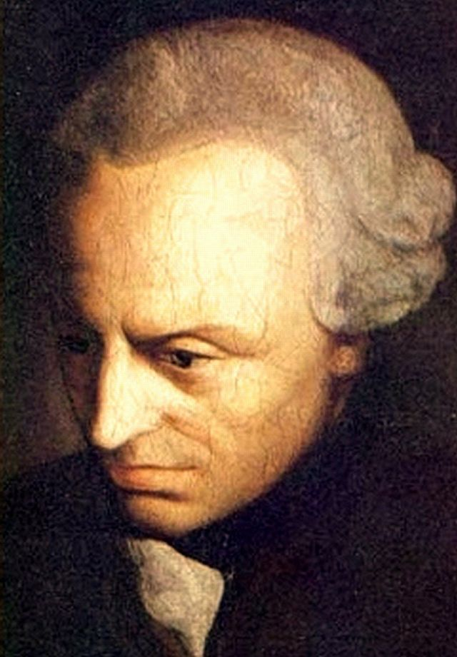
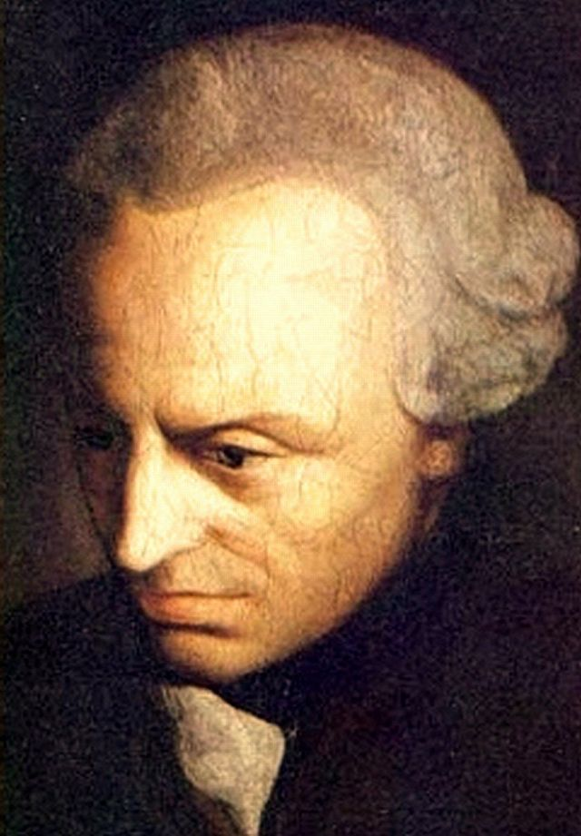

CHAPTER II
1.1 Introduction
In the Greater Hippias , Plato ascribes to Socrates the viewpoint that one cannot appropriately separate between beautiful and ugly objects without knowing what beauty is. On the other hand, in the Symposium , Plato asserts that “knowledge of beauty begins with direct experience of particular cases and knowledge of the abstract form of beauty is the highest and final stage, distilled from everyday experience.”
Throughout the centuries Plato’s ideas has been encouraging philosophers, artists, critics, and scientists to be reflecting upon the nature of beauty throughout the centuries. In this chapter I tried to include the most influential works concerning a field of aesthetic theory. Attempts to describe beauty can be divided into two main categories: theories that reviews beauty as a type of order and theories that reviews beauty as a type of pleasure. I would like to refer to these two groups next.
1.2 Beauty is an order
The Pythagoreans tried to prove that beauty is an expression of balanced harmonious, mathematical interactions such as the golden section whereas ugliness is the manifestation of disorder absent of rational logical proportions. For them the beauty was considered an objective expression of universal truth. The ancient Egyptians were perhaps the first to introduce the golden section in the design of the Pyramids, but it was Pythagoras who was first to present its mathematical formulation.
Pythagorean ideas were later quite popularized and followed by many. Plato writes in Philebus that beauty is established and consists of proportions. Aristotle in Poetics linked aesthetics with higher order and size well as symmetry and definiteness in Metaphysics . St. Augustine of Hippo asserts that beauty is related and based on numbers . Gottfried Wilhelm von Leibniz (July 1, 1646 - November 14, 1716) was ascribing beauty a cryptic, sensuous expression of mathematical qualities . William Hogarth (November 10, 1697- October 26, 1764) designated elements of beauty pertinent in art. Many other authors expressed similar views.
Western philosophy sympathized with Pythagorean concepts of beauty because of two significant reasons: The relation between beauty and order and the practice suggested that the parts of a beautiful object are complement each other, and well composed, oriented in space, and create a unified whole was tempting to the rational mind. This perspective provokes the notion of union in diversity: Beauty consists of complexity that is allied by order. Taking into account the fact that order is the key notion for accepting beauty, rises a question if there are unifying conditions of beauty that relate to all examples of beautiful objects, in the same manner that the laws of nature affects physical laws.
One of the most influential philosophers who had contributed to aesthetic investigation was Alexander Baumgarten (July 17, 1714- May 26, 1762). He suggested an establishment of a new science, called aesthetics. Baumgarten argued that beauty has a technical side, alike the laws nature it could be revealed by methodical investigations based on experience. Baumgarten was not popular enough among philosophers, however many mathematicians and psychologists influenced his views. In the field of psychology, the exploration of beauty is mainly referred to Gestalt theory and experimental aesthetics. Max Wertheimer (April 15, 1880 - October 12, 1943) and Kurt Koffka (March 18, 1886 - November 22, 1941) researched spatial-visual form of perceived objects. According to these theorists, the objects that make up our environment, perceived by the senses not as separate entities, but as an organized form. Koffka founded experimental aesthetics and introduced it into psychology.
In the mathematical realm one of the most important figures is considered D. Birkhoff (March 21, 1884 - November 12, 1944) He came up with a formula that encapsulated his insights into aesthetic value and described his theory. Birkhoff's formula and its potential applications—to such creations as vases, architectural designs, melodies, and even poetry in order to formulate a concept of beauty. Birkhoff's concluded that the pleasure originated from any artwork or beautiful object depends on two variables: order (O), which stands for the unity of the object, and complexity (C), or the diversity expressed by the object. At the core of his theory was a formula: M = O/C. In other words, Birkhoff put a high aesthetic value on orderliness and a low one on complexity. In his view, beauty increases as complexity decreases.
formula for aesthetic measure could be applied to isolated polygonal figures. In this case, O = V+ E + R + HV – F, where V is vertical symmetry, E is equilibrium, R is rotational symmetry, HV is the relation of the polygon to a horizontal-vertical network, and F is a general negative factor (unsatisfactory form). C is the number of distinct straight lines containing at least one side of the polygon.
Daniel E. Berlyne (April 25, 1924 – November 2, 1976) had a significant impact on experimental aesthetics in the twentieth century, he introduced an idea of “happy medium” in a psychological practice. He describes the pleasure obtained by perceiving beauty and good art as a reduction of excitation. Complex forms causes arousal in tension, and subsequently, when the perceived whole is observed, tension is reduced. According to his theory, researches tend to confirm that certain medium degree of complexity arouses most joyful effect and that extreme amounts of simplicity or complexity are distasteful .
However, one of the most respected aesthetic philosophers of the twentieth century Monroe C. Beardsley (December 10, 1915 -September 18, 1985) did not share sufficiently the idea of rendering beauty or “fine” art in terms of a happy medium or an average. He argues that the association of complexity with disorder fails to explain the fact that complexity is a relevant soil for admire, and that the degree of informative value is not high enough to produce the aesthetic evaluation of an object. Beardsley maintains that beauty is a type of order, but argues that the aesthetic perception inspired by information theory leads to absurd. Aesthetic order, according to Beardsley, avoids mechanical framing and manifests freedom, diversity, and uniqueness.
Heinrich Wölfflin (1 June 1864 – 19 July 1945) an acknowledged art historian, classifies good art as an life form in which nothing could be replaced or moved from its place, but in which all must remain as it is . Ruth Lorand, although, argues that the idea of an organic unity leaves with no regard, in most of its variations, the quantitative feature of beauty. Some objects are more beautiful than others, and ultimate beauty of the kind observed by Wölfflin and others is barely possible. Aesthetic order, according to Lorand, highly unpredictable, and, paradoxically, an order without laws.
The terminology of organic form or an organic whole proposes that beauty represent a non-mechanical order and includes inner forces or structures. In an organic form the whole maintains the isolation of the parts, and the various parts are interdependent. Plato was the first to suggest a notion of art as an organic form in connection with literary works of art.
1.3 Beauty is a pleasure
The direct connection between beauty and emotion, and the complexities involved in beauty definition as a quality of the object, have given a base to the idea that beauty is not a quality of the object, but instead an emotion suggested by the object. St. Augustine (November 13, 354 AD - August 28, 430 AD) wonders whether an object is aesthetically attractive because it pleases or pleases because it is a-esthetically attractive, in a work De vera religione he reveals that the object pleases because it is aesthetically attractive. According to St. Augustine beauty is the type of pleasure and not identical with it .
Empiricists of the eighteenth century, considered taste, to be a capacity for valuing beauty. Francis Hutcheson (8 August 1694 – 8 August 1746) describes beauty as a cause of pleasure that specifies not only qualities discovered in the object, but also the character of the viewer's aesthetical sense . Joseph Addison (1 May 1672 – 17 June 1719) writes that possibly there is no genuine beauty, only certain variations of matter that the mind considers beautiful . Thomas Reid In his Essays , ascribes an occult features to beauty: we are aware how it affects our senses, but not what it is in itself.
Immanuel Kant (April 22, 1724 - February 12, 1804) is considered the most significant figure in modern philosophy together with influential Scottish philosopher David Hume (April 26, 1711 - August 25, 1776) both men spoke of aesthetics in terms of ‘taste’, to be an ability to perceive quality in an artwork.
‘Taste’ might seem completely subjective—we all know the saying ‘there’s no account for taste’. Some people have favourite colours and desserts, just as they prefer certain kinds of automobiles or furniture. Isn’t art just like this? Perhaps you prefer Dickens and Fassbinder, while I prefer Stephen King and Austin Powers; how can you prove that your taste is better than mine? Hume and Kant both struggled with this problem. Both men believed that some works of art really are better than others, and that some people have better taste.
Hume and Kant were dealing with the same problems but had different approaches in order to prove their theories. In influential essay Standard of Taste (1757), Hume argues that different viewers often equally appreciating the beauty of the same object. He likewise highlighted education and experience: men of taste obtain certain capabilities that lead to agreement about certain authors or artworks to be finest. Such people, he felt, finally will reach consensus, and in doing so, they estimate a ‘standard of taste’ in universal sense. These experts can define and separate works of high aesthetics value from less valuable ones. Hume stressed men of taste have to be capable to ‘preserve minds free from prejudice’, yet no one shall appreciate immoral attitudes or ‘vicious manners’ in art. Nevertheless nowadays skeptics tend to criticize the narrowness of this view, saying that Hume’s taste-arbiters only acquired their values through cultural indoctrination.
Kant as well argued about judgments of taste, he attempted to connect the gap between rationalism and empiricism. His version of beauty in Critique of Judgment (1790) is the first methodical examination of the aesthetic phenomenon in philosophy. However Kant was concerned mostly with clarifying judgements of Beauty and differentiates between the beautiful and the sublime. Beauty delights through the free play of the mind and understanding and retain the imagination in restful contemplation. The sublime expresses a disharmony between sensual abilities and reason. Therefore, the sensation of the sublime conveys a mental anxiety. Kant describes beauty in relations with irregular kind of pleasure that consists in contradictory features. Kant intended to show that good judgments in aesthetics are concealed in the feature of an artwork itself, not just in our preferences and us. Kant attempted to label our human capabilities in relation to our perception and categorizing of the world around us. There is a complex interaction among our mental abilities including perception, imagination, and intelligence or judgment. Kant believed that in order to accomplish our human purposes and function properly in the world, we marque much of what we sense, often in rather unconscious ways.
“We modern Westerners recognize round flat things out in the world, and we categorize some of these as dinner plates. Then we use them to eat our meals. Similarly, we recognize some things as food and others as potential threats or marriage partners.It is not easy to say how we categorize things like red roses as beautiful. The beauty of the roses is not out there in the world, as the roundness and flatness are in the plates. If it were, then we would not get into so many disagreements of taste. And yet there is some sort of basis for claiming that the roses are beautiful. After all, there is quite a lot of human agreement that roses are beautiful and that cockroaches are ugly. Hume tried to resolve this problem by saying that judgements of taste are ‘intersubjective’: people with taste tend to agree with each other. Kant believed that judgements of beauty were universal and grounded in the real world, even though they were not actually ‘objective’. How could this be?”
Kant is regarded as well as an ancestor of the modern scientific psychologists who researched judgements of beauty by observing infant preferences for faces, tracking viewers’ eye movements, or involving artists to do magnetic resonance images (MRIs images). Kant concluded that people naturally apply certain concepts to the world to categorize sensory feedbacks that suit a purpose.
For example, when I find a round flat thing in the dish- washer that I recognize as a plate, I put it away in the cupboard with other plates, not in the drawer with spoons. Beautiful objects do not serve ordinary human purposes, as plates and spoons do. A beautiful rose pleases us, but not because we necessarily want to eat it or even pick it for a flower arrangement. Kant’s way of recognizing this was to say that something beautiful has ‘purposiveness without a purpose’.
Numerous authors after Kant, nevertheless, tended to reject the objective nature of beauty and defined it as principally subjective. Edgar Allan Poe (January 19, 1809 - October 7, 1849) argued that when people define beauty, they do not imply a quality but an effect—a powerful and pure elevation of the soul. George Santayana (December 16, 1863 – September 26, 1952) stated that beauty does not relate or belong to an object. It is an reaction to pleasure that is mistakenly regarded as a quality of the object, such as color, composition, or size. In this opinion, beauty is a value that reflects the viewer position, thus is entirely subjective. The inclination to connect beauty to objects and assume other people to practice the similar beauty according to Santayana, a extraordinary psychological sensation that asks for psychological investigation.
Although, not all of those who regard beauty in relation to pleasure consider it subjective. Clarence I. Lewis (April 12, 1883- February 3, 1964)
for example, views all assessments, including beauty evaluation, as type of empirical information. He states that all types of empirical experiences are relational and they vary evenly on both the qualities of the object in question and the inputs of the contemplating mind. Regarding beauty as a relational quality avoids the subjective-objective conflict and attracts similarities between awareness of beauty and relational perception of other qualities.
John Locke (August 29, 1632- October 28, 1704) separates between objective and personal qualities. The former are principal qualities liberated of the spectator's apprehension; the last are secondary and tertiary qualities that reflect emotional observations and sensual responses . Reacting on this understanding, David W. Prall (October 22, 1940-) holds that beauty is established in pleasurable anxiety and is therefore a tertiary quality that reproduces the spectator's respond to the object's qualities . Beauty, as a tertiary value, is most subtle to distinct variations amongst spectators. Personality is also essential in Mary Mothersill's classification of beauty. According to his exploration, an object is beautiful if it origins pleasure by feature of its aesthetic properties. Aesthetic properties are the properties that describe the personality of object and separate it from others. The degree of beauty, Mothersill maintains, demands a consistent theory, since the degree of beauty is the measure of the emotion it origins.
1.4 Beauty and art
Art was traditionally regarded to be a source of aesthetics; some even claimed that natural beauty is related to artistic beauty. Yet, Plato, divided art and beauty into two independent notions: genuine beauty mirrors truth, whereas art is a misleading imitation of nature. Differently Aristotle, maintains that fine art is beautiful and therefore, the two are inseparable: a fine work of art is a beautiful object. The Aristotelian aesthetic practice was prevalent for eras, but it was the eighteenth century that offered growth to the concept that producing beauty is the vital purpose of art.
Kant maintains that fine art is beautiful, yet it varies principally from natural beauty: a good work of art is a depiction of beautiful. A representation could beautiful even if its subject matter is not beautiful. Georg Wilhelm Friedrich Hegel (August 27, 1770- November 14, 1831) claims that beauty is the crucial point of art, and natural beauty is a echo of artistic beauty In this vision, beauty mirrors intended formation, not random results of blind, ordinary forces. Friedrich von Schiller (November 10, 1759 - May 9, 1805,) connects art with liberty and beauty: we reach at liberty through creative beauty, since it is a product of intended, free choice . The contrast between artistic and natural beauty guided Oscar Wilde (October 16, 1854- November 30, 1900) to the statement that life and nature replicate art much more than art replicates life or nature. Art is the formation of beauty; life and nature establish its raw materials Benedetto Croce (February 25, 1866- November 20, 1952) likewise argues that the notion of natural beauty is a imitative of artistic beauty. Beauty of nature cannot be clarified without one views it as the work of a divine creator. To Croce, beauty is a substitute of intuitive perception and expression, and these refer to the artistic form. The content of the work is beautiful only when shaped into form.
Robin G. Collingwood (February 22- January 9, 1943) describes art as an challenge to attain beauty Nevertheless, his standpoint did not increase popularity in the twentieth century. The dominant logical tendency is preferred, it would be perceived straightforward, definable notions and has not been encouraging to the study of the contradictory nature of beauty, its vague logical position, and the infinite arguments over matters of taste. Therefore, beauty has been rejected as a unclear and irrelevant concept and perceived inappropriate to art. Ludwig Wittgenstein(April 26, 1889 - April 29, 1951) observes in this logical manner that beauty is a strange word that is hardly ever used . John A. Passmore argues that there is something doubtful about the idea of beauty, and that artists appear to exist rather well without it. He links beauty with kitsch and bourgeois art .
The connotation of beauty with superficiality and relaxing bourgeois existence is contrasting to the radical essence of modern art and the overall atmosphere amongst the two worlds detaching beauty from nowadays art common practice. According to Curt J. Ducasse(July 7, 1881- September 3, 1969), there is no vital connection between art and beauty. Art is an challenge to convey feelings, and artists must be able to produce or express ugliness in their work . Nelson Goodman (August 7, 1906 November 25, 1998) claimed that many of the best paintings are, in the most literal sense, ugly. Beauty, to Goodman, is a vague and misleading concept, while art is a type of language that has no vital connection with beauty . The significant and acknowledged official description of art presented by George Dickie similarly avoids the idea of beauty.
Mary Mothersill (1923-2008) intensely criticizes the broad abandonment of beauty and its separation from art. She maintains that the concept of beauty is crucial and undisputed in art criticism, because though critics do not clearly connected to beauty, the concept is implied in their criticism. Mothersill's examination of beauty reflects a variation of the method. By the turn of the century we observed the growing of a transformed interest in numerous aspects of beauty. Wilfried Van Damme explores the anthropological perception of beauty .
Eddy M. Zemach supports the objectivity of aesthetic ideas and their practical testability. James Kirwan analyses the history of the notion in order to enlighten the involvement of beauty. Peg Zeglin Brand studies the character and importance of beauty in every day life and in relation to gender. Lorand suggests an idea of aesthetic organization that renews the association of beauty and art, and Nick Zangwill reconsiders the metaphysics of beauty . Many other modern reports confirm and concludes that beauty is central to human kind experience in spite of its neglect in the reasoning of the twentieth century. The genuine significance of beauty is bound to intrigue the thoughtful mind and stimulate further examinations of its nature.
.jpg)
.jpg)
.jpg) 

.jpg) 
